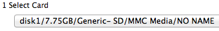
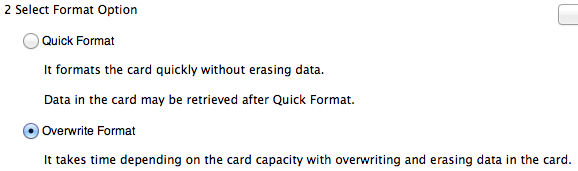
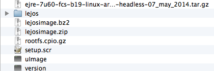

Installing LeJOS on an EV3 lego robot
This page is guide you through how to get the LeJOS system on the EV3 robot, so that you can use the Lego Rovers applications.
- What You Need
- Formatting the SDCard
- Copying the Files
- Running LeJOS
1. What You Need
To run LeJOS on your robot you will need the following items:
- A micro SDCard which is a least 2GB and at most 32GB
- The zip file located here
The micro SDCard must be FAT32 formatted. To see how to format the micro SDCard correctly see the formatting the SDCard section for your computer.
Top of Page
2 Formatting the SDCard
First download and install the sdcard formatter program from
here.
Run the program then first select your sdcard from the dropdown menu.

Choose overwrite format.

Click Format. This will take a bit of time when it is finished you will have a FAT32 formatted SDCard.
Top of Page
3. Copying the Files
First unzip the file you downloaded from the What You Need section.
Then copy the files to the newly formatted SDCard. Your sdcard should have these files.

Top of Page
4. Running LeJOS
Eject your micro SDCard from your computer and place it in the EV3 robot. Turn the robot on, this will take a while (longer if it is the first time) and when the robot makes a chime LeJOS will now be running.
Top of Page